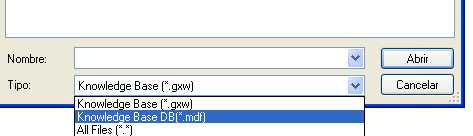

All Knowledge Base information is stored in SQL Server database, so with that database, you can create the KB and build all again. You can also copy or duplicate a Knowledge Base in a new folder. All that you need to do for creating a KB from an MDF, is just to select the mdf file in the "Open KB" dialog:  Steps to manually restore the KB or duplicate it in another folderSupposing you have the GX_KB_TEST.mdf and GX_KB_TEST.LDF files, and you want to open it as a KB with GeneXus, then you must follow these steps:
<ConnectionInformation>
<DBName>GX_KB_Test</DBName>
<IntegratedSecurity>True</IntegratedSecurity>
<ServerInstance>SERVERNAME\SQLEXPRESS</ServerInstance>
<CreateDbInKbFolder>False</CreateDbInKbFolder>
</ConnectionInformation>
Make sure to change connection parameters accordingly to your local environment.
If you encounter any troubles, check Basic tips about Managing KBs using SQL Server. Copying an mdf from another PCThere is an easier way to create a Knowledge Base from an .mdf file, that only works when the .mdf file is brought from another PC. The following steps are not supposed to be used in order to duplicate a local KB to another folder in the same PC.
|
| Backlinks | |
| GeneXus FAQ/How do I backup a KB? | Open - Knowledge Base |